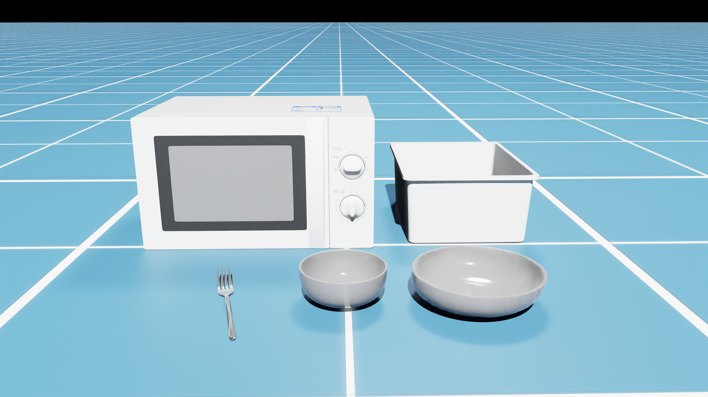

Stage 1: Task and Scene Construction
Overview
Scene construction is the foundation of sim-to-real transfer, where a high-fidelity simulation environment that accurately represents the real-world workspace needs creating. This involves three key steps: identifying and collecting all necessary assets (robots, objects, and environment elements), precisely measuring their spatial relationships in the real world, and systematically configuring them in the simulator with appropriate physical properties and randomization ranges.
-
Asset Identification and Collection: Analyze and collect all physical elements involved in the task, including the robot system, work surfaces, target objects, and environmental fixtures. Assets can be sourced from simple geometric primitives, open-source libraries like PartNet-Mobility and YCB Dataset, or custom models created for specific requirements.
-
Spatial Measurement and Positioning: Measure the precise positions and orientations of all components in the real environment using laser rangefinders or calibration boards. Document fixed positions (robot base, equipment placement), randomization ranges for dynamic objects, and operational boundaries to ensure accurate spatial relationships in simulation.
-
Simulation Environment Setup: Configure the simulation scene based on measured data, setting up static elements at their exact positions, defining randomization ranges for dynamic objects, and assigning appropriate physical properties (mass, friction, collision models) to ensure realistic interactions during task execution.
Task Example
Using the kitchen microwave task and the canteen task as the examples to demonstrate the complete scene construction process.
Task Description
Kitchen task: The robot needs to grasp a bowl, place it in the microwave, and close the microwave door.
Canteen task: The robot needs to grasp a fork, place it in the blanket, and then grasp a plate.
Asset Collection
Main assets involved in the Kitchen task include:
- UR5 robot and its fixed base
- Work surface
- Microwave (articulated model with openable door)
- Bowl (graspable rigid body object)
Main assets involved in the Canteen task include:
- UR5 robot and its fixed base
- Work surface
- Blankets
- Fork (graspable rigid body object)
- Plate (graspable rigid body object)

Position Measurement
Precise measurements in the real environment:
 (The image of real-world measure)
(The image of real-world measure)
Simulation Implementation
Configure the scene in IsaacLab based on measurement results:
Scene Configuration Key Points:
- Use fixed relative coordinate system
- Set reasonable physical parameters
- Configure collision detection and grasping constraints
Code Reference
Specific scene configuration implementations can be found in the following codebases:
Kitchen Task Scene Configuration:
- File path:
manip-as-in-sim-suite/wbcmimic/source/isaaclab_mimic/isaaclab_mimic/tasks/manager_based/ur5_sim/ur5_put_bowl_in_microwave_and_close.py - Contains position settings and physical property configurations for microwave, bowl, and other assets
Canteen Task Scene Configuration:
- File path:
manip-as-in-sim-suite/wbcmimic/source/isaaclab_mimic/isaaclab_mimic/tasks/manager_based/ur5_sim/ur5_clean_plate.py - Demonstrates multi-object scene construction methods
Next Steps
After completing scene construction, the next stage involves camera calibration to ensure visual observations in simulation are consistent with the real environment. This is crucial for vision-based policy learning.